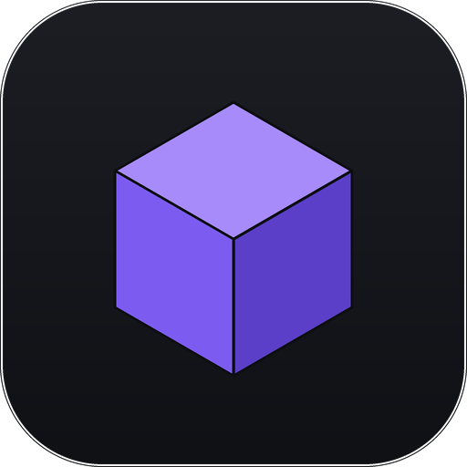
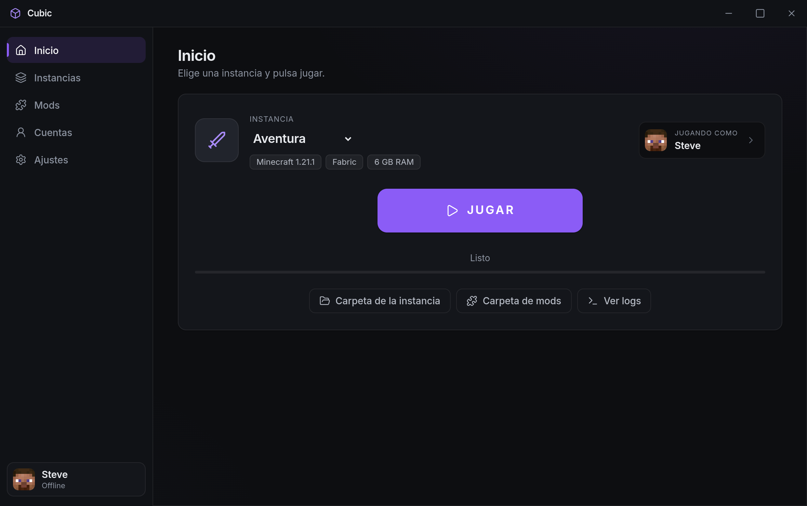
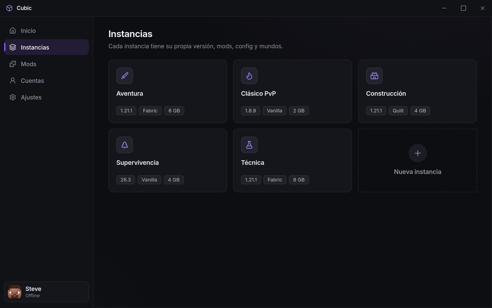
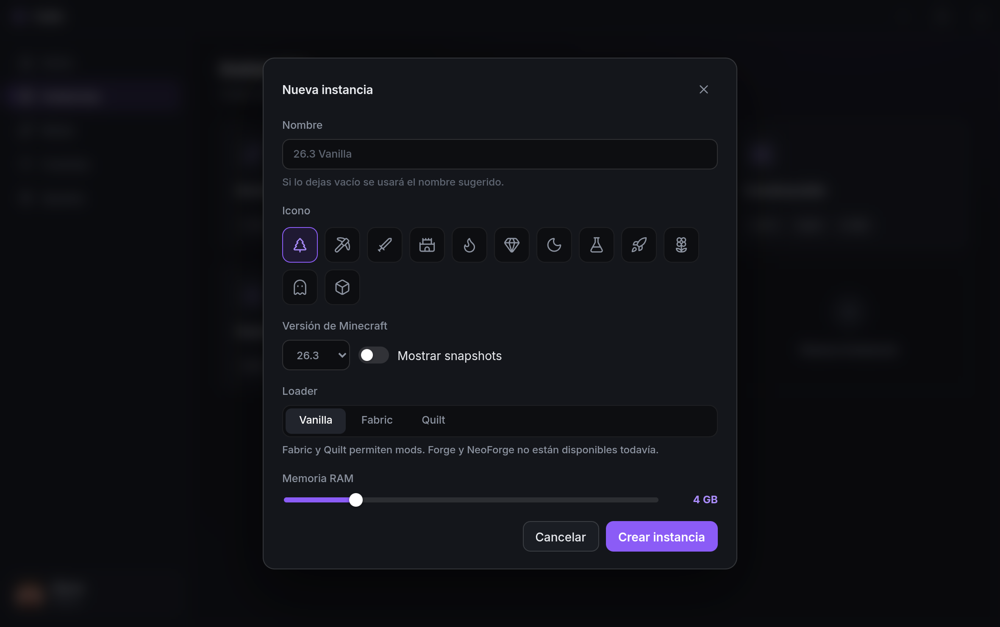
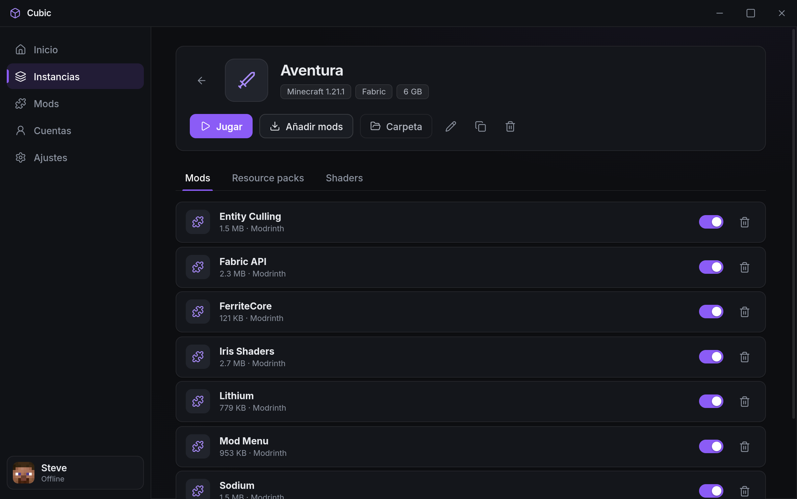
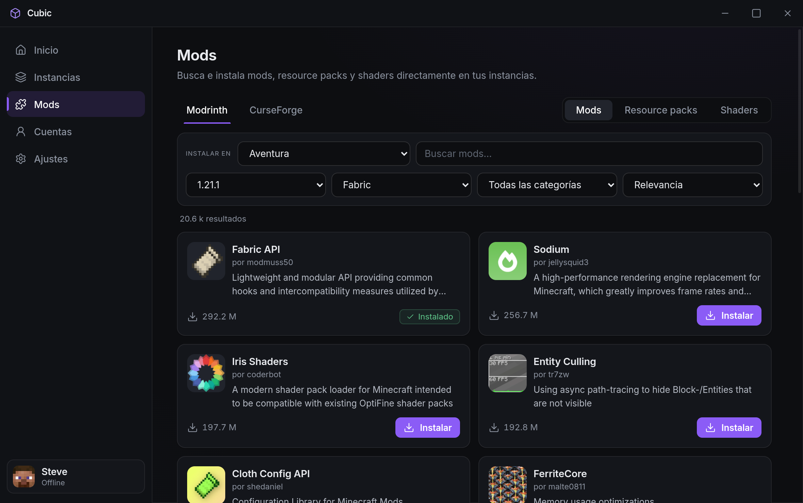
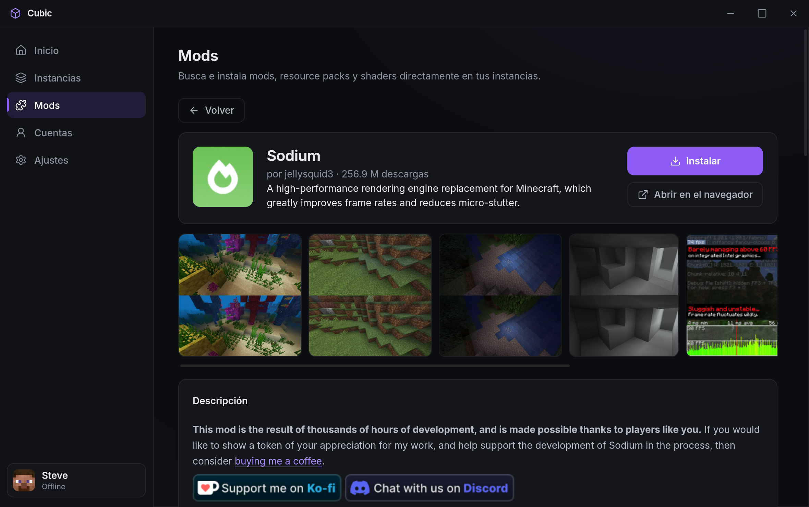
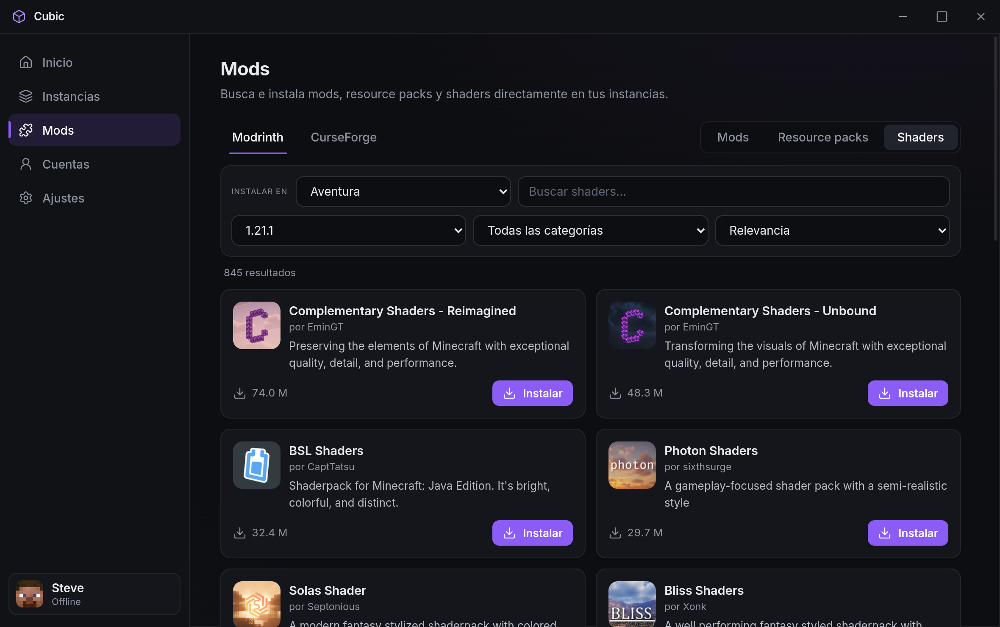

Java automático
Se descarga la versión que pide cada Minecraft. No instalas nada.

Cubic DescargarLauncher de Minecraft Java para Linux
Cubic ordena cada partida en su propia instancia, descarga los mods con sus dependencias y consigue el Java correcto por ti.

Instancias
Una instancia para sobrevivir con amigos, otra llena de mods y otra para la versión clásica. Cada una guarda sus propios mundos, mods y ajustes, así que nada se rompe entre sí.


Nombre, icono, versión, loader y memoria. Una sola ventana.

Activa, desactiva o elimina cada mod sin tocar carpetas.
Mods
Mods, resource packs y shaders de Modrinth y CurseForge dentro del launcher. Cubic elige el archivo que corresponde a tu versión y añade lo que haga falta.



Funciones
Se descarga la versión que pide cada Minecraft. No instalas nada.
Entra con Microsoft una vez y cambia de cuenta cuando quieras.
Las librerías y versiones se comparten entre todas las instancias.
Cubic trabaja en su propia carpeta y no toca la del launcher oficial.
En camino: soporte para Horizon, un proyecto no oficial que reescribe Minecraft Java 26.3 en Rust (requiere tu copia del juego). Aún no viene en la descarga, y las descargas oficiales de Horizon no están disponibles ahora.
Dale permiso de ejecución y ábrelo. Necesitas Minecraft Java comprado.
Descargar para Linux